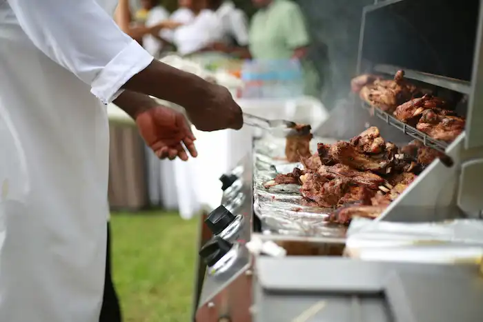

Welcome to Naija Kitchen
Authentic Nigerian cuisine with a modern twist.
About Us

At Naija Kitchen, we bring the vibrant flavors of Nigeria to your plate. From jollof rice to pepper soup, our family-owned restaurant is proud to share the rich heritage of Nigerian cuisine with the local community.
Find Us
123 Felicia Street Olowora, Lagos, Nigeria
Open: Monday – Saturday | 09:00 AM – 10:00 PM